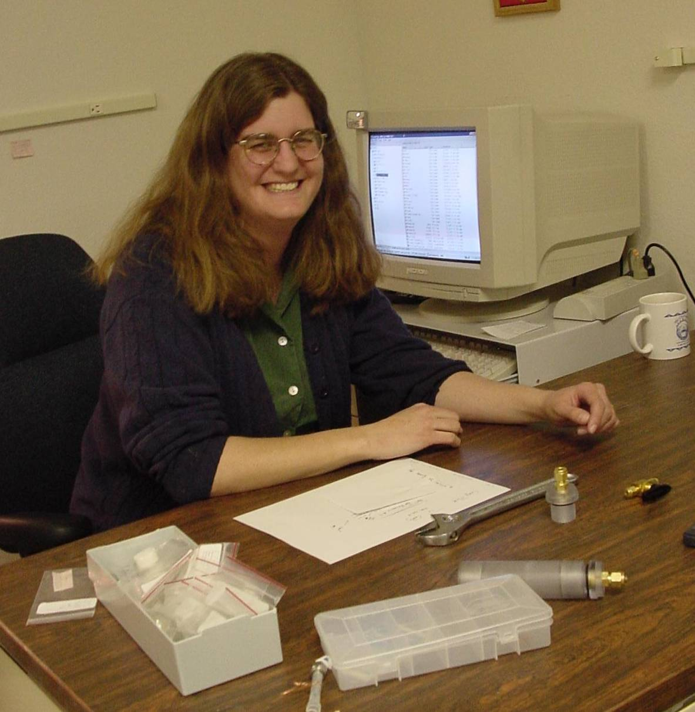

Catherine Clewett
M.A. in Physics, Washington University in St. Louis (1998), joined New Mexico Resonance in 1999. Previous work was in solid state and materials physics, including basic research on metal hydrides, non-destructive evaluation of fiber epoxies as well as laser polarization of 129Xe. Current work includes helping to develop unusual imaging systems such as a low-field permanent magnet and using fluorinated gases to understand non-invasively evaluate ceramics.
